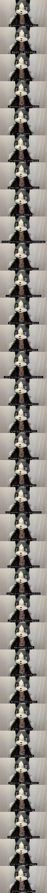
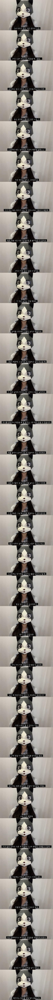
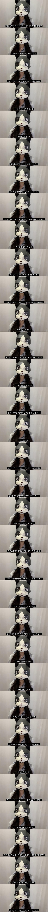

남자 키는 여자 가슴이라고 보면 된다.
그 이상임
가족에게 사랑받지 못한 애들은 열등감이 심해요
아니야 보추인 경우엔 반대로 키가 작아야 귀여워

댓글 활화산마냥 열등감 폭발해버렸네 ㅋㅋ
인디언기우제 같은 거임.. 키크면 그럼 다 착하냐? 키작은 남자도 아무리 착해도 화낼 때가 있을 텐데 그때마다 했제? 했제? 하면 답이없음
맞음 키작은애들이 기본적으로 피해의식이나 열등감이 있음
약간 지역감정 비슷한건가? 사기꾼은 꼭 그지역이고 깡패는 자쪽이고 그런거?
다읽진않았는데 키작은사람이 종종 자기가 키가작아서 자기를 무시하고있다고 느끼는경우를 많이봤음 자기를 만만하게보는거같다고 화내던가
키작으면 좀 장난 많이치고 이런건 있을 수 있다 보는데 서열이나 유리문 현타 이런건 걍 지가 자의식 과잉+정병 같은데 ㅋㅋㅋ
저런애들은 항상 저런걸 의식해서 서열이나 무시당하는 시그널 이런걸 스캔하고다니기 때문에 친구끼리 장난친 것도 지는 잠깐 가서 본게 다인데 그 그룹 내의 inside joke나 고딩때 추억 이런 맥락을 모르고 지 망상으로 굴려서 아 얘가 서열이 낮구나 이런 식으로 받아들이는거 같더라
여자들이 로판 환장하는게 이유가 있다니까 고귀한 신분이나 고생을 모르고 자랐다거나 이런거 존나 좋아해
돌판에서도 트위터 ㅂㅈ년들은 무슨 아이돌이 가난한 집에서 컸으면 그게 조롱하고 깔 이유가 되고 << 이거 진짜임
지가 빠는 멤버는 어디 부잣집이나 하이쏘 출신이라고 염불외고다니고 ㅋㅋㅋ 존나 기괴함
저렇게 생각하는 애들은 저렇게 생각하는 애들끼리 만나는 거임 걍
끼리끼리 노는거고 니가 맞다 내가 맞다 굳이 싸울 필요도 없음
말하면 입만 아프고 그 세계관 맞는 사람 찾아서 살든가 말든가
키작아서 생기는 열등감은 본인 스스로 그냥 만들어지는게 아니고 살면서 겪으면서 생기는거라 쉽지 않음
난 열등감은 없는데 저 여자 말은 맞다
남자들끼리 키 좀 작으면 알게 모르게 무시하고 서열 나누는 거 있음
여자들 기싸움 하듯이
근데 이건 키만이 아니고 몸집이나 말빨이나 싸움 실력이나 운동 신경, 게임 실력 같은 이런 것도 마찬가지이긴 함
난 그래서 이런 식으로 서열 나누려고 하는 애들은 바로 걸러버림
마지막의 타 커플과 스스로를 비교하면서 현타 온다는 대목 보면 저분도 마음의 키가 큰 분은 아닌거 같아 씁쓸하네
본인이 성토하는 키작남의 열등감을 그대로 재현하고 있음..
친구들 키가 조금 작고 그러면 놀려먹는데 너무 작은친구는 놀릴 엄두도 못내겠음;;
쿨찐
남에게 욕해놓고 상대가 반응하면 발끈이니 열등감 폭발이니 사고방식이 왜 그럼?
우리 회사에도 불평/불만 존나 많고 남 잘되면 뒤에서 욕부터 박는 개새끼 있는데, 키작고 대머리임 씨발. 일할때 존나 시끄럽다 진짜